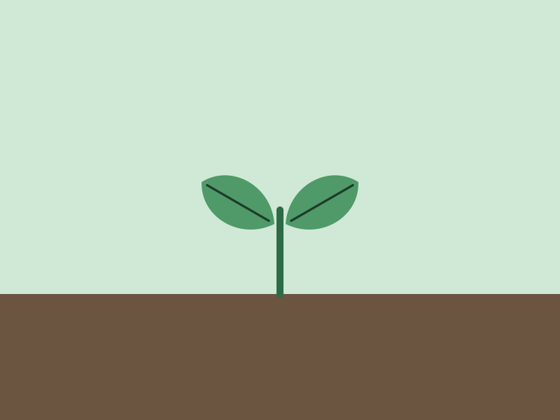

Water
Until it runs from the bottom, then empty the saucer after ten minutes. Never a little and often; the roots want a soak and then air.
Living room, east window · plant 3 of 12
Bought as a four-leaf cutting three springs ago; eleven leaves now, the newest two with holes. Water when the top two inches are dry, which is about every ten days in summer and every three weeks in winter.

Three things, in the order they matter.
Until it runs from the bottom, then empty the saucer after ten minutes. Never a little and often; the roots want a soak and then air.
Bright, but not the sun itself. An east window is right: morning sun, then shade. Leaves that yellow from the edge are getting too much.
Once a month from April to September, at half the strength on the bottle. Nothing at all in winter.
The last six entries. The interval is worked out from these.
| Date | What | Note |
|---|---|---|
| Mon 31 Aug | Watered | Two litres, ran through. Saucer emptied. |
| Fri 21 Aug | Watered | Top three inches dry. Fed at half strength. |
| Sun 16 Aug | Wiped | Dust off the leaves, both sides, damp cloth. |
| Tue 11 Aug | Watered | Slightly early; hot week. |
| Fri 31 Jul | Watered | Ran through. |
| Sat 25 Jul | New leaf | Eleventh leaf unrolled. Two holes. |

Next spring
Roots are showing at the drainage hole and water runs through faster than it did. In March, move it to a 28 cm pot with a chunky mix: bark, perlite and compost in equal parts. Windowsill will remind you in the last week of February.
Set the reminderUsually too much water, or water that sits. Let the pot dry further than you have been, and check the saucer is being emptied. One old leaf going yellow a year is normal and means nothing.
Dry air or a draught, most often in winter with the heating on. Move it away from the radiator, or stand it on a tray of wet pebbles. The tips will not recover; the next leaves will be fine.
You are waiting a day or two too long. Shorten the interval by a day on this page; the plant will tell you when you have it right by not doing this.